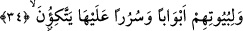
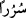
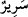
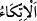
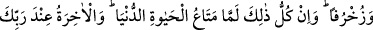
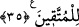
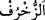
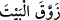

34. Evlerinin kapılarını ve üzerine yaslanacakları koltukları da (hep gümüşten
yapardık).
“Büyût” kelimesinin tekrarlanması, ziyâde takrîr ve beyân içindir.
Bir şeyin girişine “kapı” denir. Bunun aslı şehir, ev ve oda gibi mekânların giriş
kapılarıdır.
Gümüşten koltuklar. “
/sürur” kelimesi “
/serîr” kelimesinin çoğuludur. Râgıb
şöyle demiştir: “Serîr”, üzerine oturulan şeydir. Eğer bu, nimet ve varlık sahipleri için
ise sevinç ve mutluluk anlamındaki sürûr kökünden gelir. Ölünün serîri her ne kadar
sürûr ve sevinç kaynaklı değilse de zâhirde buna benzetilmiştir. Ölen kişinin Allah’a
dönüşüyle yaşayacağı sürûr ve sevinçten bir uğur ve bereket beklenerek böyle denmiş
de olabilir. Ayrıca ölen kişi Peygamberimiz (s.a.)’in “Dünya müminin zindânıdır”[157]
sözüyle işâret olunan dünya zindanından kurtuluşun bir sevincini yaşamaktadır.
“
/ittikâ” dayanmak, yaslanmak demektir.
35. Ve onları zinetlere boğardık. Bütün bunlar sadece dünya hayatının
geçimliğidir. Âhiret ise, Rabbinin katında, Allah’ın azâbından sakınıp rahmetine
sığınanlara mahsustur.
“Bütün bunlar,” bu tüm detaylarıyla anlatılan evler “sâdece dünya hayatının
geçimliğidir.” Bunların devâmı ve bakâsı yoktur. Pişmanlık ve sorumluluktan başka
elde bırakacağı bir kazanç da yoktur. İçerisinde îzâhın yetersiz kaldığı çeşitli nimetler
bulunan “âhiret ise Rabbinin katında” inkâr ve günahlardan uzak durmak sûretiyle
“Allah’ın azâbından sakınıp rahmetine sığınanlara mahsustur.”
“
/zuhruf” aslında altın demektir. Mecâzen zînet ve süs mânâsında kullanılır.
Nitekim kelime, “yer zînetini takınıp süslendiği sırada…” (Yûnus, 10/24) âyetinde bu
anlamda kullanılmıştır.
Râgıb şöyle demiştir: “Zuhruf”, nakışlı süs ve zînet demektir. Bu mânâda altına da
zuhruf denilmektedir. Şu âyette olduğu gibi: “…yahut altundan (zuhruf) bir evin
olmalı…” (el-İsrâ, 17/93) Yani süslü ve nakışlı altından.
Tâcü’l-masâdir’de, “zuhruf” kelimesinin “süslenmek ve bezenmek” anlamında olduğu
kaydedilmektedir.
“
/zevvekal beyte” ifâdesi “evi süsledi yani civadan tasvirler yaparak sırladı”
demektir. Sonra civa ve civa ile sırlama olmasa da her süslü ve nakışlı olan şeye